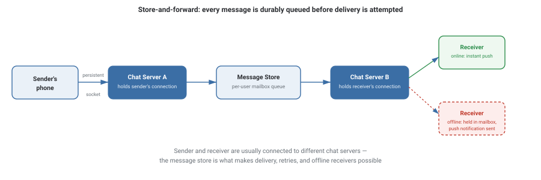

Design WhatsApp
Design a one-on-one and group messaging service: messages must be delivered reliably and in order, work whether the receiver is online or offline, and confirm delivery back to the sender (the familiar single/double checkmarks). The hard part isn't sending a message — it's guaranteeing delivery over an inherently unreliable network, at billions of messages a day.
Requirements
- Send/receive one-on-one and group messages.
- Deliver messages to offline users once they reconnect.
- Show delivery status: sent, delivered, read.
- Low latency for online-to-online delivery (feels "instant").
- No message loss, even across server restarts or network blips.
- Messages from one sender to one receiver arrive in the order they were sent.
Capacity Estimation
| Assumption | Value |
|---|---|
| Daily active users | 2 billion |
| Messages sent per day | ~100 billion |
| Average message write QPS | ~1.16 million / sec |
| Average message size (text) | ~100 bytes |
| Concurrent open connections (persistent sockets) | ~500 million+ |
| Fraction of receivers offline at send time | ~5–10% |
Two numbers dominate the design here: ~1.16M writes/sec means the message path has to be extremely cheap per message, and hundreds of millions of concurrent open connections means this is fundamentally a connection-management problem, not just a database problem.
High-Level Design

Each user's device holds one long-lived connection (WebSocket or a custom TCP protocol) to a chat server. Because there are far more users than any one server can hold connections for, users are spread across many chat servers, and a message often has to hop from the sender's server to the receiver's server before it can be delivered.
Deep Dive
Store-and-forward: durability before delivery
The moment a chat server accepts a message from the sender, it's written durably (to a fast, replicated store) before the server attempts to deliver it — and only then does the sender see a single checkmark ("sent"). This ordering is what guarantees no message is silently lost if a chat server crashes mid-delivery: on recovery, undelivered messages are simply retried from the durable store.
Delivery status: single, double, and blue checkmarks
Each status is a separate acknowledgment traveling back to the sender: "sent" fires once the message is durably stored server-side; "delivered" fires once the receiver's device acknowledges receipt; "read" fires once the receiver's client reports the message was opened. Each of these is itself a small message that has to be reliably delivered back to the sender — the same delivery problem, recursively.
Message ordering per conversation
Ordering only has to be guaranteed within a single sender→receiver (or group) conversation, not globally across the whole system — a much weaker, cheaper requirement. This is typically achieved by routing all messages for a given conversation through the same partition/shard, so a simple incrementing sequence number per conversation is enough to detect and correct out-of-order delivery.
Handling offline receivers
If the receiver's device has no open connection, the message sits in that user's durable mailbox and a push notification (via APNs/FCM) is sent to wake the app. When the user's device reconnects, it fetches everything queued in its mailbox since its last sync point, in order.
Trade-offs
- Enables true low-latency, server-initiated delivery ("push," not "poll").
- Expensive to hold at scale — hundreds of millions of idle sockets need dedicated infrastructure.
- Simpler infrastructure, no long-lived connections to manage.
- Either wastes resources (frequent polling) or adds real latency (infrequent polling) — a bad fit for "instant" messaging.
What interviewers are listening for: that you treat message durability as non-negotiable (write before delivery, not after), and that you separate "how do online users get instant delivery" from "how do offline users eventually get their messages" as two distinct sub-problems.
If you're a fresher: describing the store-and-forward flow and why persistent connections beat polling for this use case covers the core of this question.
If you're ~3 years in: you should be ready to discuss per-conversation ordering/sharding and how delivery-status acknowledgments themselves need reliable delivery.
Interview Questions
Click a question to reveal the answer.
Why store the message durably before attempting delivery, rather than after?
If the message were delivered first and stored afterward, a crash between those two steps could lose the message with no record it ever existed. Storing first means that even if the delivery attempt fails or the server crashes immediately after, the message is safely recorded and can be retried — durability is guaranteed before anything else happens.
How would you guarantee messages in a single conversation arrive in the order they were sent?
Route all messages belonging to the same conversation (or the same sender, depending on design) through the same partition or shard, and attach an incrementing per-conversation sequence number. The receiving client can then detect gaps or out-of-order arrivals using that sequence number and reorder or request retransmission as needed — this is far cheaper than trying to guarantee a single global ordering across the entire system.
Why is holding persistent connections harder than it sounds at WhatsApp's scale?
Hundreds of millions of concurrent open sockets consume memory and file descriptors even while completely idle, and connections drop constantly (phones losing signal, switching networks, going to sleep) requiring fast reconnection and re-authentication. This turns connection management itself into a major piece of infrastructure — load balancing which chat server holds which user's connection, and routing messages to whichever server currently holds the recipient.
How does a "read receipt" (blue checkmark) actually get from the receiver back to the sender?
It's a small message traveling in the opposite direction, through the same store-and-forward pipeline as a normal chat message: the receiver's client sends a "read" acknowledgment to its chat server, which is durably stored and forwarded to the sender's chat server, then pushed to the sender's device — exactly the same reliable-delivery machinery, just carrying a status update instead of message content.